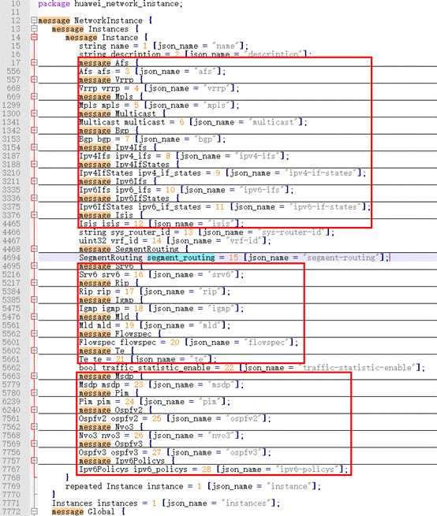

Proto File Preprocessing

The sampling paths in this example are for reference only and may differ from those supported by the device.
When sampling data from a device through telemetry, the NMS determines the range of data to be sampled based on services. It then determines the sampling path from which to obtain the corresponding .proto file. For example, when interface traffic data needs to be sampled, the sampling path is huawei-ifm:ifm/interfaces/interface/mib-statistic, and the corresponding .proto file is huawei-ifm.proto, which is found based on the sampling path.
The NMS can use the Proto tool to generate code suitable for its development environment based on the .proto file. The NMS then integrates the generated code into its development environment for subsequent compilation and decoding. Because a .proto file is generated from a complete YANG model tree, it contains a large amount of content. However, only a small number of nodes in the tree are used for NMS interconnection. This wastes resources, as most of the code generated by the Proto tool is not used. Furthermore, the code may not compile or run correctly if it contains a large number of code segments. To address this issue, you need to preprocess the .proto file and manually delete the unnecessary nodes.
A .proto file is a text-format file that is hierarchically indented by braces. You can use a text editor that supports code folding to edit and delete the content of the .proto file. For example:
- Use Notepad++ to open the huawei-network-instance.proto file.
- On the menu bar, choose Language > J > Java. The collapse button is displayed as .
- You can quickly select and delete unnecessary nodes through the collapse button.
For example, if the NMS needs to interconnect with only Segment Routing-related nodes, you can delete the nodes and their IDs defined by other intra-layer messages in pairs, as shown in the following figure. However, the nodes and IDs that are not defined by the messages cannot be deleted separately.

The content in the red boxes can be deleted.